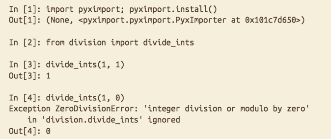
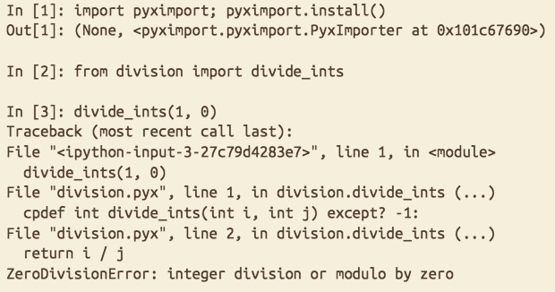

- Cython提升效率主要基于两点：
- 使用提前编译而不是运行时解释；
- 使用静态类型而不是动态类型；
解释器VS编译执行
- Python执行代码的方式：先将Python代码编译成为字节码，然后通过虚拟机将字节码翻译成为机器语言。这里的字节码是机器无关的，而虚拟机负责和底层机器的交互；
- C语言是直接将代码编译成为机器可识别的语句，直接与底层交互；
- 有一种方式可以连接执行字节码的虚拟机和直接机器码的底层：那就是让Python解释器直接运行编译好的C代码，也成为拓展模块。当Python解释器直接运行拓展模块时，它不再去使用字节码转换；
- 通常将代码提前编译好能够使程序获得10%-30%的性能提升
动态类型VS静态类型
- Python是一门动态语言，所以我们在使用Python的时候，程序花费的大部分时间是在想搞清楚每一个变量的类型；
- Cython带来性能提升的核心是它使用了静态类型，所以省去了Python去推断变量类型的步骤
使用cdef进行静态声明
- 在Cython中，没有静态声明类型的语句和在Python中运行的情况一样
如果我们想静态声明类型，可以利用
cdef关键字，如1
2cdef int i
cdef float m使用了
cdef的语句的变量就是C语言中的变量，同样也遵守C语言中的类型转换规则- 在Cython的函数中，
cdef语句和python语句一样使用缩进表示，并且拥有局部作用域 我们也可以批量声明C类型变量
1
2
3
4
5def integrate(a, b, f):
cdef:
int i
int N=2000
float dxCython中没有延用C语言中的
static关键字，但是有const关键字- 不同C类型在Cython中的声明
| C type | Cython def statesment |
|---|---|
| Pointers | cdef int *p |
| Stack-allocated array | cdef int arr[10] |
| typedef aliasedtypes | cdef size_t a |
| Compound types | cdef tm time_struct |
| Function pointer | cdef (void*)f(int, double) |
- Cython基本上实现了所有的C类型，这个也对我们直接包装C库很有利
Cython中的自动类型推断
- Cython中在不带来歧义的情况下，为了提升效率，会进行一些类型推断；
- 我们需要注意的一点是，Python中的整数、浮点类型是无限精度的，也不会溢出的，所以Cython不会主动将可能是Python中的这些对象转化为C类型；
有一个Cython编译指令可以使Cython拥有更多的类型推断权力
1
2
3
4
5
6
7
8cimport cython
def more_inference():
i = 1
d = 2.0
c = 3+4j
r = i * d + c
return r这时候就需要我们自己来检测数值是否溢出了
Cython中的C指针
- Cython中的指针声明方式和C中类似，值得强调的是，
*运算符是绑定在变量上的，而不是类型关键字上的，这一点和C中的一样； - Cython中不使用
*解引用，因为Python中用*和**来指定不定数目的位置参数和关键字参数； Cython中指针解引用有两种方式：
1
2cdef double *p
p[0] = 101
2
3from cython cimport operator
cdef double *p
print(operator.dereference(p))
我们在C中使用
->来表示一个结构体指针中的成员变量，在Cython中，我们不使用这种方式，而是只有一个.运算符，无论是对于结构体本身还是结构体指针
混合使用静态和动态类型
Cython允许静态类型变量和动态类型变量相互赋值，比如
1
2cdef int a, b, c
tuple_of_ints = (a, b, c)应该注意的是，如果a,b,c是指针，上面的表达式就没有意义了，因为Python中没有指针变量，我们应该先解引用成为int类型，再组成tuple
- Python类型和C/C++类型的对应
| Python type | C type |
|---|---|
| bool | bint |
| int/long | char/short/int/long/long long |
| float | float/double/long double |
| complex | float complex/double complex |
| bytes/str/unicode | char */std::string |
| dict | struct |
- 在Python2中，Python int对应于C long，而Python long对应于无限精度；在Python3中，二者都拥有无限精度。当我们把Python中的整数类型转化成为C类型的时候，Cython会检查是否溢出。我们可以使用`overflowcheck`和`overflowcheck.fold`控制这种检查行为。
- 当`overflowcheck`打开的时候，转换过程中发生溢出会发出异常，否则不会；
- 当`overflowcheck.fold`打开的时候，Cython会移除溢出的部分；[?]
- Python的float类型对应于C中的double类型
- Python中的complex类型对应于C中一个拥有两个double的结构体，而这种类型也和C99中的_complex和C++中的std::complex自洽
- Python中的bytes类型可以和C/C++中的char *和std::string相互转化
- 使用`c_string_type`和`c_string_encoding`编译指令可以使Python中的str和unicode和C/C++中的char *和std::string相互转化
使用Python类型进行静态类型声明
我们不仅可以在Cython中静态声明C类型，也可以静态声明Python类型，比如
1
2
3cdef list particles, modified_particles
cdef dict name_for_particles
cdef str pname但不是所有的Python类型都可以进行静态声明：它们必须在C中有实现，并且Cython有声明这些类型的权限
- 静态声明Python类型的内部机制就是声明一个C指针，指向这个Python对象
- 静态声明之后，这个变量名就只能绑定这种类型的值
- 对于int或者float这种在Python和C中关键字重名的类型而言，声明的时候是当做C变量来声明的
- 当一个变量是静态声明成为C类型的时候，它拥有C语言的语义；如果声明成为Python类型，那么它拥有Python类型的语义
对于整数除法而言，C和Python的一个重要区别是，C是向0取的，Python是向无穷大取的。所以Cython延用了Python中的语义，向无穷大取。同样的，我们也可以通过一个编译指令来是它使用C的语义
1
2
3
4
5cimport cython
def divides(int a, int b):
return a / bCython中还有一个
cdivision_warnings的编译指令，如果打开这个，一旦发生整数出发，便会发出警告
为了速度而使用静态声明
- 基于我们之前的分析，静态声明有助于减少python解释器的工作，从而提高效率，这个不仅仅针对于Cython中的C类型，对Python类型也适用
- Cython目前支持一下的Python内置类型进行静态声明
| types |
|---|
| type, object |
| bool |
| complex |
| basestring, str, unicode, bytes, bytearray |
| list, tuple, dict, set, frozenset |
| array |
| slice |
| date, time, datetime, timedelta, tzinfo |
- Python中有
PyLongObject来对应于无限长度的整数 - 在Cython中，无论是动态的还是静态的Python变量，内部的处理方式都和Python中的一样，包括引用计数
引用计数和静态字符串类型
Python的一个重要特性就是自动内存管理。这种特性是通过引用计数和垃圾回收机制实现的，但是如果使用C和Python结合的语言，很可能就会C指针不计入引用计数而导致资源被回收，例如
1
2
3b1 = b"All men are mortal."
b2 = b"Socrates is a man."
cdef char *buf = b1 + b2这个语句的前两句和第三句的
b1 + b2部分是Python语义的，但是赋值部分是C语义的，这时候Python会创建一个临时变量来存储b1 + b2的值，然后C指针buf指向这个临时变量。但是，由于没有Python对象指向这个临时变量，垃圾回收机制会自动回收这块内存，从而导致危险行为。正确的做法应该是1
2
3
4b1 = b"All men are mortal."
b2 = b"Socrates is a man."
tmp = b1 + b2
cdef char *buf = tmp使用一个Python对象
tmp来指向这个对象，然后再将C指针指向这里。这时候，需要保证有Python对象指向这个对象，否则，这块内存还是会被回收。
Cython中的三种函数
- Python中的函数拥有很灵活的性质，同时Python中的函数也具有一等函数的性质，但是Python函数同时也具有很大的调用开销
- C中的函数具有最小的调用开销，但是它的灵活性也比较差
- 不能在其他函数中定义函数
- 拥有一个静态声明的名称，运行时无法改变
- 只接受位置参数
- 不接受参数默认值
- Cython同时支持Python函数和C函数，它们可以位于同一个文件中之内，也可以相互调用
Cython中的Python函数：使用def关键字
我们可以在一个
.py文件中写一个普通的python函数，如下1
2
3
4
5# file: fact.py
def py_fact(n):
if n <= 1:
return 1
return n * py_fact(n-1)如果我们把这个函数写在一个
.pyx文件中，并且用pyximport导入，那么我们得到的函数将比在/py文件中的函数快一点点，这一点性能提升主要是省略了编译的过程。二者的不同之处还有如下：.py版本的函数type是function；.pyx版本的函数type是builtin_function_or_method.py版本的函数有很多附加的属性，比如__name__等，这些属性都是可以修改的，但是.pyx版本的这些属性不可修改- 调用
.py版本的时候，是使用python解释器编译字节码；调用.pyx版本的时候是调用编译好了的C代码
我们也可以尝试对参数进行静态类型声明
1
2
3
4
5# file: typed_fact.pyx
def typed_fact(long n):
if n <= 1:
return 1
return n * py_fact(n-1)这样基本上不会对性能带来多少提升，因为最后return的时候是一个long类型和一个Python对象的乘法，结果还是要返回一个Python对象，这样的开销还是比较大的
Cython中的C函数：使用cdef关键字
在Cython中，我们可以通过
cdef关键字来用Python语法写C函数，上面的函数就可以被写成1
2
3
4
5# file: c_fact.pyx
cdef long c_fact(long n):
if n <= 1:
return 1
return n * py_fact(n-1)这个代码没有使用任何的Python对象，所以这个代码经过Cython编译之后的效率和直接用C写差不多
cdef的函数可以被同一个源文件里面的def或者cdef定义的函数调用，但是不能被外部的函数调用我们可以用一个Python函数来包装上面的函数，使之可以被外部调用
1
2def wrap_c_fact(n):
return c_fact(n)这样的方式的缺陷在于，因为内部还是C函数，所以其中的整数不拥有无限的精度
利用cpdef来结合def和cdef关键字
我们上面利用一个Python函数来包装
cdef函数，实际上Cython中有一个cpdef关键字来实现这个功能1
2
3
4cpdef long cp_fact(n):
if n <= 1:
return 1
return n * cp_fact(n - 1)由于
cpdef函数实际上是利用Python包装了一个C函数，所以它的参数必须要是Python和C类型中都兼容的形式，比如C中的void类型、指针或者数组就不适用了
Cython中的inline函数
- Cython中也支持inline函数，比如：
1
2cdef inline long c_fact(long a):
# ...
函数和异常处理
Cython中的
cdef和cpdef会返回非Python类型对象，所以在异常处理上面需要做一些特别处理，比如下面的例子1
2cpdef int divide_ints(int i, int j):
return i / j我们运行的时候则会出现
即它会显示出异常，但是并不能捕捉到这个异常，并且它也能返回一个值（虽然是个错误的值）Cython中为
cdef和cpdef提供了一个异常分句，能够让Python的异常处理机制捕捉到这个异常，语法如下1
2cpdef int divide_ints(int i, int j) except? -1:
return i / j运行结果如下
注意到这里的except是使得异常能够被捕捉，-1是异常返回值(这一块还不清楚)
函数和embedsignature编译指令
- Cython中的
def和cpdef函数一般可以有函数文档，但是一般没有函数签名，我们可以通过embedsignature编译指令来让Cython把函数签名加载函数文档的开头
类型转换
Cython中提供和C中非常相似的类型转换方式，只是语法稍有不同，比如
1
cdef int *ptr_i = <int *>v
比如我们可以利用类型转换来打印内存地址
1
2
3
4
5def print_address(a):
cdef void *v = <void*>a
cdef long addr = <long>v
print("Cython address:", addr)
print("Python id", id(a))Cython也支持强制类型转化为Python里面的类型，比如list类型
1
2
3
4
5def cast_to_list(a):
cdef list cast_list = <list>a
print(type(a))
print(type(cast_list))
cast_list.append(1)上述例子中，如果a是list或者list的子类，那么Cython会针对最后一个
append操作调用PyList_SET_ITEM或者PyList_Append方法，否则很可能会产生系统错误如果我们不确定我们要进行的类型转换是否正确，我们可以采取下面的方式
1
2
3
4
5def safe_cast_to_list(a):
cdef list cast_list = <list?>a
print(type(a))
print(type(cast_list))
cast_list.append(1)由于加了一个
?，如果不能进行类型转换，Python会报错TypeError
使用structs, unions和enums进行类型声明
Cython中声明structs和unions
1
2
3
4
5
6
7cdef struct mycpx:
float real
float imag
cdef union uu:
int a
short b, c我们注意到Cython中使用了cdef关键字，并且用缩进代替了花括号
我们可以结合struct和union的声明和
ctypedef别名关键字，我们可以得到1
2
3
4
5
6
7
8
9ctypedef struct mycpx:
float real
float imag
ctypedef union uu:
int a
short b, c
cdef mycpx zz并且我们就可以用我们声明的struct和union来定义变量了。其实上面的
cdef和ctypedef在struct和union的声明中作用是一样的Cython中允许三种方式初始化一个struct
字面常量
1
2cdef mycpx a = mycpx(3.14, -1)
cdef mycpx b = mycpx(real=2.71, imag=1.61)成员变量的方式
1
2
3cdef mycpx zz
zz.real = 3.1415
zz.imag = -1.0使用Python字典
1
cdef mycpx zz = {"real": 3.14, "imag": -1.0}
Cython中不允许直接使用嵌套的struct或者union声明（这个在C中是允许的），比如在C中
1
2
3
4
5
6struct nested{
int outer_a;
struct _inner{
int inner_a;
} inner;
};在Cython中的对应形式应该是
1
2
3
4
5
6cdef struct _inner:
int inner_a
cdef struct nested:
int outer_a
_inner inner这种嵌套结构，我们可以逐个赋值，也可以使用嵌套字典赋值
1
cdef nested n = {'outer_a': 1, 'inner': {'inner_a': 2}}
Cython中也允许声明enum，可以在不同行声明，或者在同一行用逗号隔开
1
2
3
4
5
6
7cdef enum PRIMARIES:
RED = 1
YELLOW = 3
BLUE = 5
cdef enum SECONDARIES:
ORANGE, GREEN, PURPLE我们也可以将上面的
cdef替换成为ctypedef- 我们可以使用匿名的enum来定义一些全局常量
1
2cdef enum:
GLOBAL_SEED = 37
使用ctypedef的类型别名
Cython支持使用
ctypedef来进行别名，比如1
2ctypedef double real
ctypedef long integral别名的好处在于我们可以通过更改一行代码来改变所有使用这个别名的变量的类型，比如来控制精度；另外，我们也可以用别名来避免写C++中很长的模板类型
- 需要注意的是，
ctypedef必须是在文件的全局作用域，不能在局部作用域声明，换句话说，就是不准缩进
Cython中的for循环和while循环
我们先看一个Python中的for循环
1
2
3n = 100
for i in range(n):
# ...这个即使卸载Cython中也不会有很大的性能提升，为了能够获得性能提升，我们可以先静态声明i和n的类型
1
2
3cdef unsigned int i, n = 100
for i in range(n):
# ...这样的话，Cython会转化成为高效的C代码。
高效循环的准则
当通过一个
range函数来做循环的时候，一个要把函数参数声明成为C函数的整型1
2
3cdef int N
for i in range(N):
# ...如果我们不在循环体中使用变量i，Cython会自动把i当做C整型来处理；如果我们在循环体中使用了i，为了保证i具有Python中整型的特点，Cython会把它当做一个Python整型，这时候效率就会下降一些。如果我们非常确定i不会溢出，我们应该也静态声明变量i，如下
1
2
3cdef int i, N
for i in range(N):
a[i] = i + 1如果我们对Python中的容器进行循环（list, tuple, dict等），如果使用静态声明的指标变量，可能会带来更大的开销；
- 为了更高效的循环，我们可以考虑把Python中的容器转化为C++中等价容器（第八章会讲怎么做）或者使用内存映射（第九章会讲）
- 为了使while循环更高效，我们应该尽量使判断条件更高效，使用
while True配合内部的break语句可以转化为高效的C代码
循环的例子
我们想对一个数组中的每个元素用附近的三个元素的平均值替代，可以写成
1
2
3cdef unsigned int i, n = len(a) - 1
for i in range(1, n):
a[i] = (a[i-1] + a[i] + a[i+1]) / 3.0当i已经静态声明类型之后，是否静态声明n就不重要了，下面的代码也有同样的效率
1
2
3cdef unsigned int i
for i in range(1, len(a) - 1):
a[i] = (a[i-1] + a[i] + a[i+1]) / 3.0这样的静态声明可以把运行速度提升两到三倍（循环内部消耗不大的情况下）
Cython预编译器
Cython有一个
DEF关键字可以定义宏，这个和C语言中的#define效果一样，通过定义宏，我们可以对很多magic number进行命名，比如1
2DEF E = 2.718281828459045
DEF PI = 3.141592653589793Cython中内置了一些系统级的宏
| macro | meaning |
|---|---|
| UNAME_SYSNAME | Operating system name |
| UNAME_RELEASE | Operating system release |
| UNAME_VERSION | Operating system version |
| UNAME_MACHINE | Machine hardware name |
| UNAME_NODENAME | Name on network |
- Cython的宏中可以使用一些常数或者函数，但是仅仅局限于以下的
| Constants | None, True, False |
| Built-in functions | abs, chr, cmp, divmod, enumerate, hash, hex, len, map, max, min, oct ord pow range, reduce, repr, round, sum, xrange, zip |
| Built-in types | bool, complex, dict, float, int, list, long, slice, str, tuple |
- Cython中的宏支持条件判断，这个可以出现在程序的任何部分出现，并且可以嵌套，如下
1
2
3
4
5
6
7
8IF UNAME_SYSNAME == "Windows":
# ...Windows-specific code...
ELIF UNAME_SYSNAME == "Darwin":
# ...Mac-specific code...
ELIF UNAME_SYSNAME == "Linux":
# ...Linux-specific code...
ELSE:
# ...other OS...
利用Cython来连接Python2和Python3代码
- Python2和Python3的代码在很多地方是不兼容的，但是Cython产生的C代码和二者都是兼容的，所以我们可以利用Cython来连接Python2和Python3代码
- Cython编译的时候默认的是使用python2的语法和语言的，但是我们可以通过在编译的时候使用
-2或者-3的flag来控制Python2和Python3的不同之处，比如print在Python3中是一个函数，在Python2中是一个类似于关键字的东西
我们利用Cython来连接Python2和Python3的步骤如下
先使用Cython来将Python2或者Python3的代码转化为c代码
1
2cython -2 python2.py
cython -3 python3.py然后利用distuils把生成的C代码编译成为与Python2或者Python3兼容的拓展模块
str, unicode, bytes和其他的所有
- Python2和Python3中的字符串类型有一些共同点，也有很多区别
- 都表示一个8-bit字符的序列
- 都表示一个和变量等宽的字符序列
- （不同之处很多，还在慢慢学）
- （这一块等看完Python2和Python3中字节的区别之后再来看）